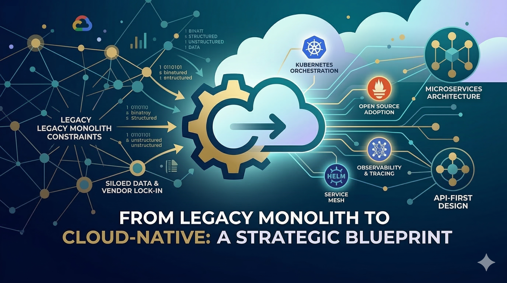
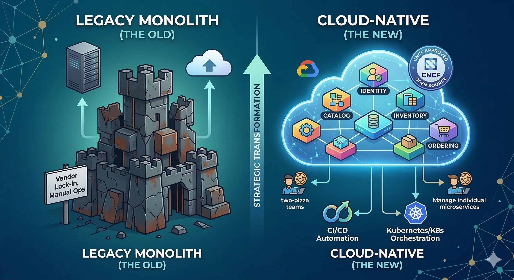

Digital transformation for a large organization is less about "flipping a switch" and more about "rewiring the plane while it’s flying." For an enterprise reliant on legacy systems, adopting a modern stack—cloud-native, open source, and microservices—is not optional; it is a prerequisite for survival.
Success requires a strategy that balances the need for innovation speed with operational stability. Here is the suggested expert roadmap for navigating this crucial evolution.
To move a large organization safely, we must use two core principles: one for architectural clarity and one for execution stability.
DDD is a philosophy that matches software structure to actual business domains. It helps identify natural boundaries where business logic and data are distinct. This is the "map" for transformation.
Named after the Australian fig tree, this is the gold standard for migration. We develop new functionality *around* the legacy system, creating a "facade" (API Gateway) that intercepts traffic.
This phased approach ensures large organizations minimize risk while building momentum.
Before touching code, audit the portfolio. We use the "6 Rs Framework" (Retire, Retain, Rehost, Replatform, Refactor, or Rearchitect) to categorize applications. We apply DDD to identify the precise boundaries for the future architecture.
Large organizations cannot be cloud-native without a standardized "Landing Zone."

Execute the Strangler Fig approach. Start with small, non-critical services (like a Notification engine) to build confidence.
Culture is 70% of the battle. Break down silos.
| Feature | Legacy Approach | Cloud-Native / Open Source |
|---|---|---|
| Deployment | Manual / Bare Metal | Kubernetes / Containers |
| Architecture | Monolithic | Microservices / Serverless |
| Scaling | Vertical (Bigger Servers) | Horizontal (More Pods) |
| Data | Centralized RDBMS | Polyglot (NoSQL, NewSQL, Cache) |